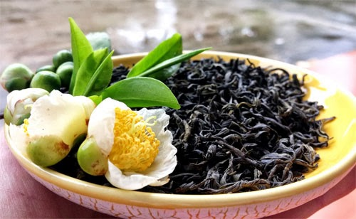
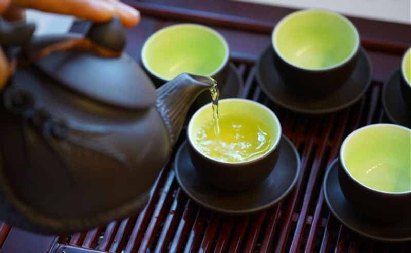

Jan 25
Tan Cuong Tea
 This is the most famous type of tea in Thai Nguyen, Vietnam. Tan Cuong (Thai Nguyen) green tea has a light greenish yellow color with a mild taste, fragrant aroma and deep sweet taste are suitable for those who want to find traditional experiences about tea (from phuclong.com.vn).